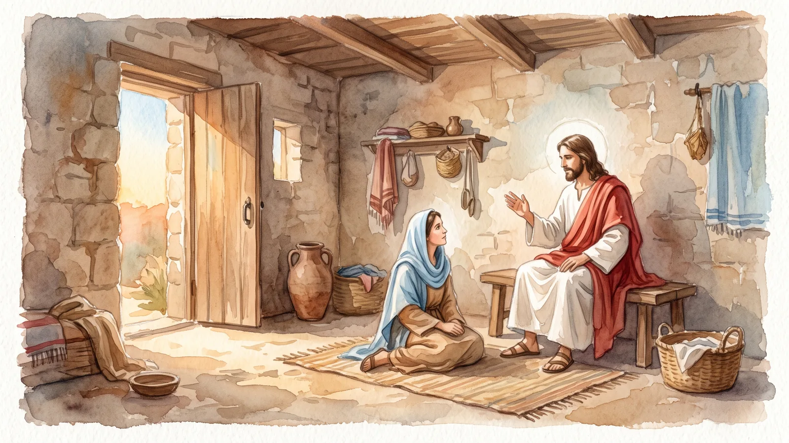
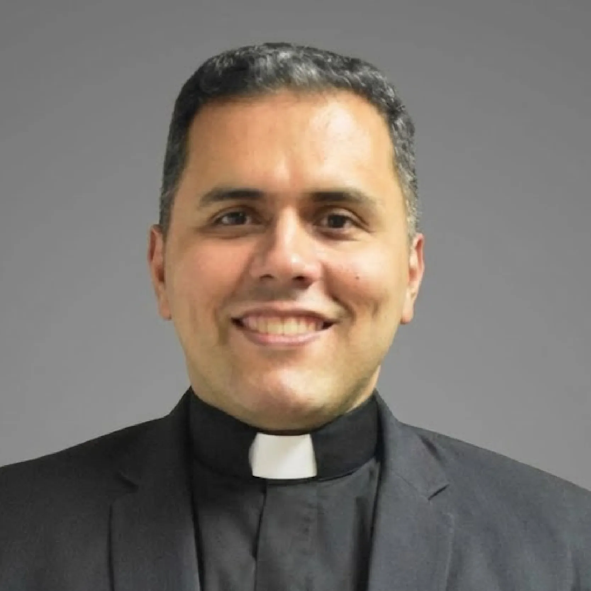

· Lc 10, 38-42
Sentarse, escuchar y estar a sus pies
Tres palabras del Evangelio de Marta y María para aprender a orar: darle tiempo solo a Dios, escuchar su Palabra y dejar que nos hable.

Hermanos, bendecimos al Señor por la palabra tan rica que nos regala esta tarde para meditar. A mí me ha llamado la atención el versículo 39:
María, sentada a los pies del Señor, escuchaba su palabra.
Esa frase me llevó a otro lugar del mismo Evangelio de san Lucas, en el capítulo 2. Cuando José y María buscaban a Jesús, lo encontraron en el templo sentado en medio de los maestros y escuchando. Ahí aparecen tres palabras que nos pueden ayudar mucho en algo esencial de nuestra vida, que es la oración: sentarse, escuchar y pies.
La primera es sentarse. Cuando alguien viene a hablar conmigo, en dirección espiritual, en confesión o en lo que sea, con problemas, dudas de fe o crisis, me cuenta toda su historia, y para eso estoy. Pero la primera pregunta que le suelo hacer es: ¿cuánto tiempo estás rezando? Y casi siempre me responden: «Padre, yo rezo todo el día, yo tengo a Dios todo el día en mi corazón». Es muy bonito ofrecerle al Señor el trabajo y lo que hacemos, y también una pequeña oración en la mañana y en la tarde. Pero no es suficiente. Orar significa sentarse. Tienes que darle al Señor cada día un tiempo que sea solo para Él. Si va a ser media hora, media hora; si son cuarenta y cinco minutos, cuarenta y cinco; si es una hora, una hora. Pero para Él. Y no me digas que rezas cocinando, escribiendo en la computadora o pasando publicaciones en Instagram. Eso no funciona así. Hay que sentarse cada día a orar.
Bueno, Padre, ya me quiero sentar a orar, ¿y qué hago? La segunda palabra es escuchar. Si no escuchas al Señor, tu oración se convierte en un diálogo contigo mismo. Claro que tienes que hablarle, pero sobre todo tienes que escucharlo. ¿Y cómo se escucha al Señor? Principalmente con la Palabra de Dios: leyéndola, profundizándola, meditándola, amándola, saboreándola. Por eso digo que a un cristiano, en la oración, no se le puede caer la Biblia de las manos.
Si hacemos esas dos cosas, viene la tercera palabra: pies. En griego se dice podes y en hebreo ragláyim, y los pies son un lugar muy interesante en la Escritura. Cuando te pones a los pies de alguien, te pones a su disposición: estás dispuesto a escuchar lo que esa persona te quiera decir.
Estar a los pies del Señor es estar dispuesto a que Él te diga lo que no quieres escuchar. Esa es la razón por la que no nos gusta orar: cuando te sientas a orar, te pones delante del Señor y delante de tu propia realidad, y en tu corazón hay cosas que no quieres ver, con las que no quieres lidiar, de las que no quieres hablar. Pero el Señor te dice en la oración: «Yo sí te voy a hablar. Te voy a hablar de tus pecados, de tu pereza, de tu impaciencia, de que no me quieres escuchar, de que no eres caritativo, de que has maltratado a tal persona». Y el que de verdad se pone a sus pies le responde: «Sí, Señor, estoy dispuesto a que me digas lo bonito y lo feo».
Por eso, hermanos, orar pide tres pasos. Siéntate: dale tiempo solo a Él. Escucha: medita con la Palabra de Dios. Y ponte a sus pies: dispuesto a oír lo que Jesús te quiere decir, porque es para tu bien y para tu salvación. Amén.

Pbro. Rafael VillalobosPárroco de Santa Lucía